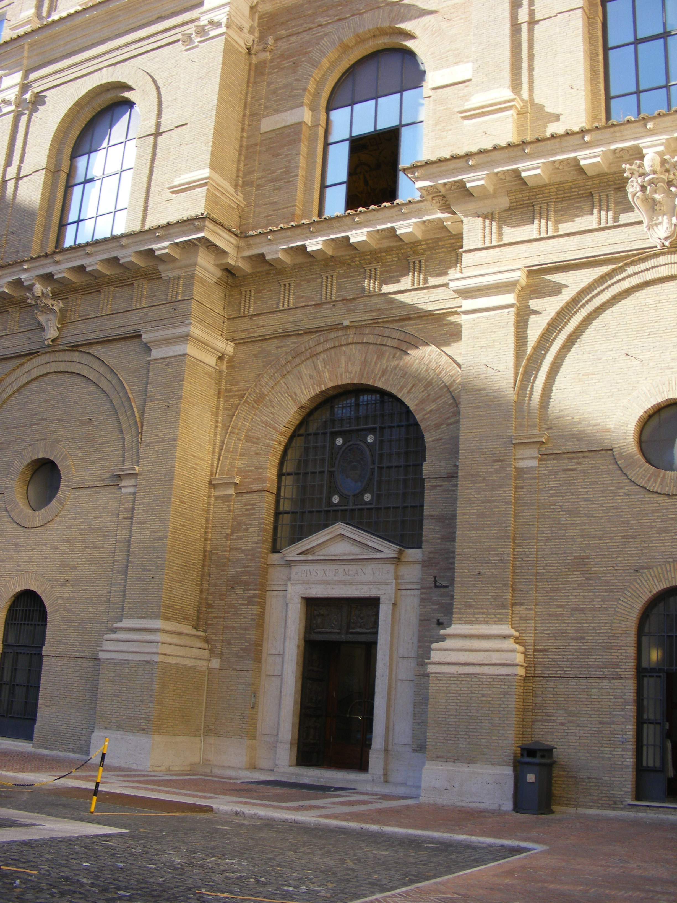
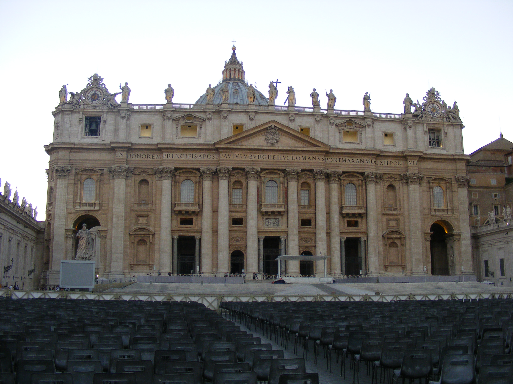

Blog
Reporting Live from the Vatican City . . .

[The front door of the Vatican Library]
This week I have been ‘on location’ in Rome, working in the Vatican Library itself. As I get ready for my last morning in the archive, I thought it might be a good idea to reflect on some of my findings so far.
I have been working on three manuscripts during my visit (Vat. Lat. 4015, 4016, and Vat. Ottob. Lat. 2516) but it is the first of these in which our nine witness statements concerning William Cragh’s hanging and miraculous resuscitation are recorded which I would like to focus on here. My impressions of the manuscript in the black and white reproductions I have worked with thus far have been of a manuscript which was a rough-ish copy, an intermediary version of the text which underwent a final cut when the strongest miracles were taken from it and presented in support of Thomas of Cantilupe’s canonisation. I was not completely wrong in my assumptions: a closer study of the hands and ink in which many of the corrections were made to the artefact have revealed at least three individuals working on tidying and polishing the text. The true extent of these alterations is also made clearer from the large number of erasures made and filled in again which were not evident in the microfilm. This was then a record of events which was subjected to a great deal of tweaking and fine-tuning.
However, what was not clear from the reproductions, is the extent to which it was also bea.jpgied and altered to make it a user-friendly reference guide of sorts. All of the ‘¶’ style paragraph markers which seem to highlight the start of a response to a new question are all alternatingly coloured red and blue. The running headers comprising of a large ‘P’ on the verso of each folio and either ‘I’ or ‘II’ on the facing page are consistently coloured red and blue respectively, and appear to have been added in one go after the manuscript was put together. Similarly, the witness and folio numbers have been added after the manuscript was assembled, as the hands are consistent throughout.
Perhaps the greatest indication that this was a fairer copy of the text than I had thought lies in the very construction of the manuscript itself. The entire thing is made up of even quires, which have been written up by different scribes, probably in parallel, and only pieced together at the end. There are several clues which support this. Firstly, a number of quires are numbered right at the bottom of the final leaf of the quire – it is safe to assume that they all once were, but that in many cases they have been trimmed off in the binding and rebinding process. Every quire also ends with a note of the first word or words which appear at the start of the next quire, indicating that the text was being copied from an earlier version which had already been divided up. The lack of continuity in hands even in the course of recording a single miracle or witness’s testimony is therefore explained by this more utilitarian approach to the manuscript’s creation, and not what I had previously hypothesised, which was that the testimonies were written up into this manuscript on a more ‘ad hoc’ basis.
From an editorial point of view, I have had to make a huge number of changes to my transcription following the discovery of deletions and additions too faint to show up on the microfilm which will now have to be inputted into the edition and alterations made to the translation. More importantly, so many of the questions I had about the manuscript’s composition have been answered, and in the process, my preconceived ideas about the creation and purpose of the text have been challenged and defeated, something which I can’t wait to discuss with the rest of the team when I get back!

Şħȧřḗ ǿƞ Ŧẇīŧŧḗř Şħȧřḗ ǿƞ Ƒȧƈḗƀǿǿķ